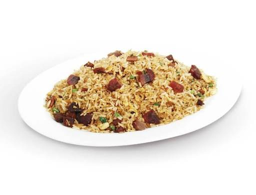

Los clásicos
El chaufa, en tres versiones.
Del wok a tu mesa en minutos. Elige el tuyo o pídelos todos al centro.


Nuestra carta
Explora nuestros platos
Lo que dicen
"El aeropuerto más generoso que he probado en Lima. Vamos casi cada domingo y siempre sale perfecto."
— Carlos M., cliente desde 2018
¿Se te antojó?
Pide por WhatsApp o acércate a nuestro local. Te esperamos con el wok caliente.